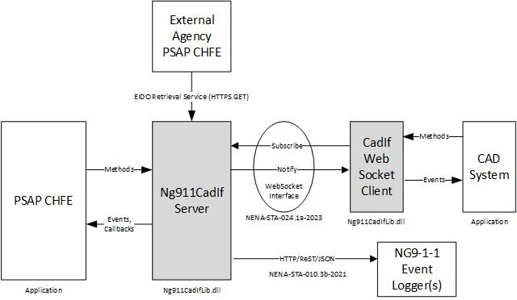

The Ng911CadIfLib Class Library
The Ng911CadIfLib is a Microsoft .NET DLL class library that NG9-1-1 PSAP Call Handling Functional Element (CHFE) applications can use to provide conveyance of EIDOs to one or more Computer Aided Dispatch (CAD) systems. The following block diagram shows the interfaces between the PSAP CHFE, the Ng911CadIfServer class and a CAD system.

The PSAP CHFE application interacts with the Ng911CadIfServer class via API methods. The Ng911CadIfServer class uses events and asynchronous callbacks to notify the PSAP CHFE when certain events occur. The Ng911CadIfServer class implements the NENA EIDO conveyance subscribe/notify protocol specified in the NENA-STA-024.1a-2023. This protocol uses WEB Sockets (RFC 6455) as the transport mechanism for JSON messages.
CAD systems communicate with the Ng911CadIfServer using the Web Socket interface defined in NENA-STA-024.1a-2020 standard. A CAD system must subscribe to the Ng911CadServer in order to receive event notification messages containing Emergency Incident Data Object (EIDO).
The Emergency Incident Data Object is a JSON document that contains all of the information about a 911 call. This information includes caller location, caller identity, and additional data about the call (such as subscriber information, information about the type of telephone service, information about the service provider and other data).
When the PSAP CHFE system answers a call, it creates an EIDO JSON object and sends it to the Ng911CadIfServer object via a method called SendEido(). The Ng911CadIfServer object will then send the EIDO JSON document to all subscribed CAD systems (or other functional elements).
The Ng911CadIfServer class supports the EIDO Retrieval Interval service specified in NENA-STA-024.1a-2023. This interface is an HTTP ReSTfull interface that an external agency's PSAP CHFE can use to request an EIDO for an incident when an NG9-1-1 call is transferred to it.
The Ng911CadIfServer class aupports an interface to one or more NG9-1-1 Event Loggers and logs events related to EIDO delivery and subscribe and notify events via the Web Sockets interface.